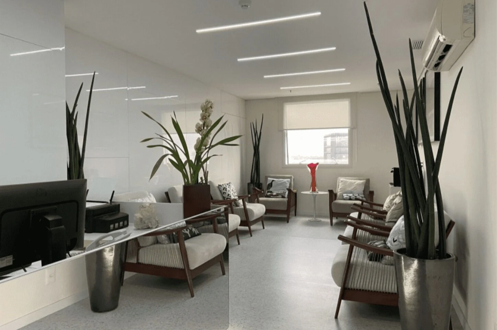
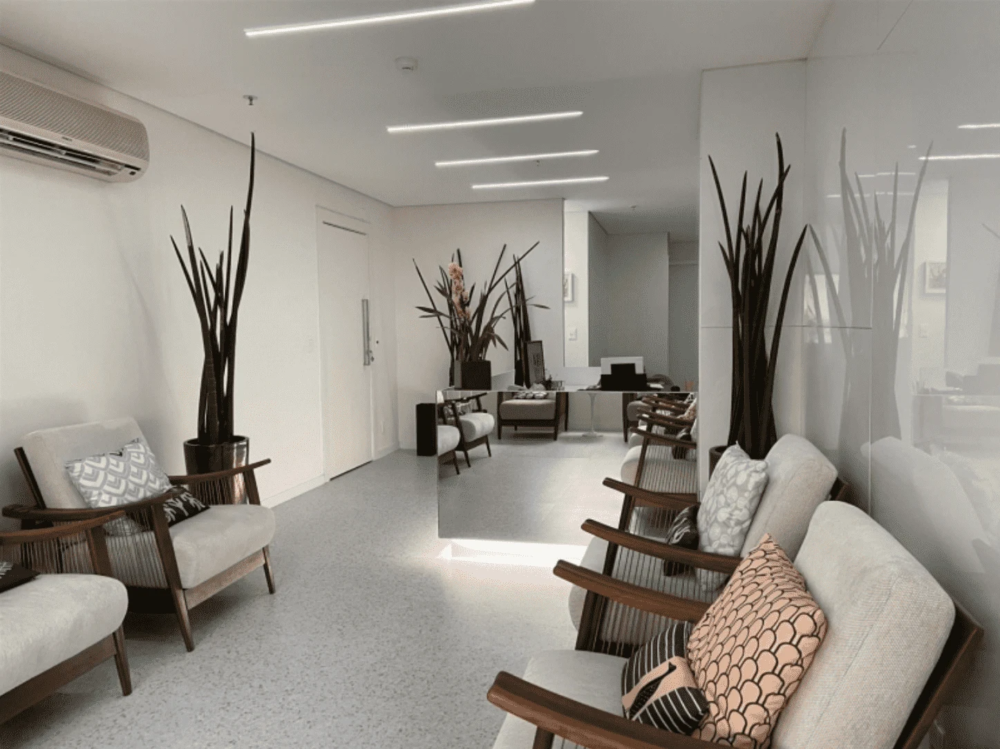
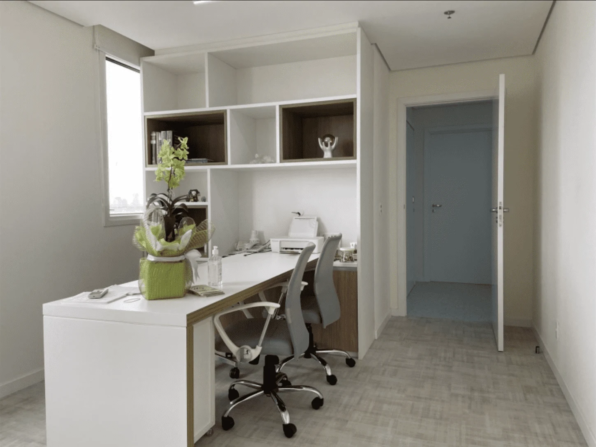

Clínica de Tratamento Hormonal e Dermatologia
Estamos localizados em São Paulo no bairro de Higienópolis. Agende a sua consulta.
MS Vida. Mais vida pra você.
Dra. Mayra Souza
Médica referência no Brasil em implantes hormonais para homens e mulheres, tendo o Dr. Elsimar Coutinho como mestre no início de sua carreira. Com vasta experiência em regulação hormonal, sua trajetória profissional é marcada pela inovação e busca por novas alternativas de implantes hormonais, absorvíveis e não-absorvíveis, e soluções mais eficazes para a saúde de homens e mulheres. Inspire-se com a Dra. Mayra.

Dra. Flávia Souza
Médica especialista em Dermatologia pela Sociedade Brasileira de Dermatologia, com pós-graduação em Dermatologia e Medicina Estética pelo Instituto Pele Saudável/SP. É membro da Sociedade Brasileira de Dermatologia e da Sociedade Brasileira de Cirurgia Dermatológica, além do Grupo Brasileiro de Melanoma e do Colegio Ibero Latinoamericano de Dermatología (CILAD). Fellow em Tricologia e Transplante Capilar pela FAPECS/CNA/ AMB.
Dra. Marianna Souza
Médica Ginecologista e Obstetra com residência na Beneficência Portuguesa São Paulo. Especialização em Ginecologia e Obstetrícia de alta performance voltada para consultório, no Hospital Israelita Albert Einstein. Atua desde 2019 na Clinica Dra Mayra Souza (MS vida) com atendimentos voltados para ginecologia e obstetrícia, reposição hormonal com ênfase em implantes hormonais, tratamentos com laserterapia voltados para síndrome geniturinária pós-menopausa, rejuvenescimento e estética vaginal.

Clínica MS Vida
Somos referência no Brasil em Reposição Hormonal e Dermatologia. Segurança do paciente com resultados comprovados.

Por dentro da clínica MS Vida



Depoimentos: Mudar sim, por você
“Há uns 6 anos comecei a sentir um cansaço crônico, libido em baixa e ouvi por várias vezes que isso fazia parte do estresse do trabalho e fui assim, de palpite em palpite, de médico em médico, até que um amigo sugeriu a Dra Mayra. Ela me explicou o que provavelmente estava acontecendo e que foi confirmado após fazer os exames solicitados. Em menos de um mês após a primeira consulta eu já me sentia outra pessoa. O trabalho permaneceu o mesmo, porém eu já era outro. A vida voltou como antes. Hoje, entre reuniões e viagens, tenho sempre meu retorno com a Dra. Mayra, minha prioridade.””
“Bendito dia em que resolvi acompanhar minha esposa a uma consulta com a Dra Mayra. Acabei atrapalhando um pouco a consulta, mas tirei um monte de dúvidas e entendi o conceito de que, após certa idade, é essencial tratar o casal. Uma semana depois fui fazer minha consulta e ganhei uma “vida nova”. Aquilo que parecia um problema só meu passou a ser tratado abertamente e nossa vida está plena. Adoro “minha” médica”.”
“Meu nome é Paulo, tenho 48 anos. Conheci a Dra Mayra pelo instagram de uma amiga. Médica com mais de 50 anos praticando esportes, triatlon e competindo. Isso me inspirou! Falei: Quero fazer isso! No mesmo dia liguei, marquei consulta e tempos depois estava iniciando uma vida nova. Comecei a pedalar, perder peso e pouco a pouco venho evoluindo. Passo a passo sem loucuras mas muito consistente! Estou muito feliz e confiante. Obrigado!!!!!!! ”
“A Dra. Mayra me acompanha desde menina. Juntas dividimos tristezas com a perda de minha mãe, mas também inúmeras alegrias que a gestação gemelar trouxe, experiências maternas, além de boas e divertidas consultas. Querida Dra. Mayra, sempre disposta a ouvir e a aconselhar, tornando a consulta a mais leve das conversas entre duas amigas de mais de 15 anos. Emoção vê-la agora também rodeada de suas tão competentes e atenciosas filhas e sempre na torcida de um futuro harmônico, saudável e grandioso.”
“Tive há 10 anos indicação para bloqueio do meu ciclo menstrual, pois era desregulado e tinha frequência de anemia, me informei, fui atrás das formas existentes até que enfim encontrei Dra. Mayra Souza, que com seu método correspondeu todas às minhas expectativas. Chip hormonal exatamente adequado para mim, bloqueio do meu ciclo menstrual e já não queria mais engravidar então válido como método contraceptivo. Fora isso, todos os benefícios indicado para mulheres da minha faixa etária onde passamos por mudanças. Sou também atleta PRO de fisiculturismo e fui bastante beneficiada com ganho de massa, bem-estar, disposição, rendimento, fora todos outros benefícios. Sou suspeita pois uma das minhas maiores inspirações é a Dra.Mayra, porque ela faz o que fala, e fala o que faz. Isso passa credibilidade, tenho muito a agradecer pela disponibilidade e pelo atendimento tão personalizado. Hoje meu marido e filhos também são chipados pois são muitos os benefícios. Sou grata por cuidar de toda minha família e amigos por minha indicação e todos sempre muito satisfeitos pelos resultados.”
“Sempre tive problemas com meu ciclo menstrual, dores fortes e longos períodos de sangramento eram uma rotina. Fiz várias cirurgias, que somadas me renderam muitas aderências. Retirei o útero e num outro momento fui retirar os ovários mas sofri uma intercorrência, meu intestino foi perfurado e os ovários não foram retirados. E foi assim, com dores e totalmente descompensada que fui parar nas mãos da Dra Mayra! Ela me virou do avesso e determinou, “comigo você não vai fazer mais cirurgia“! Faço a reposição Hormonal desde 2011, tenho qualidade de vida, pude retomar atividades até então frustradas pelo desconforto físico e emocional. Desde 2011 não tive qualquer hemorragia ou inflamação nos ovários e não fiz nenhuma cirurgia!! Sigo o tratamento com Dra Flávia, filha da Dra Mayra!! Tenho profunda gratidão por toda família.”
“Tive o prazer de conhecer a Dra Mayra há 17 anos e não a deixo por nada nesse mundo. Não apenas pela competência técnica que é inegável mas, especialmente pela humanidade e simplicidade. No momento mais importante da minha vida, o nascimento da minha filha, durante a aplicação da anestesia ela simplesmente me abraçou forte e me deu tanto carinho que a anestesia foi aplicada sem eu perceber. Em outros momentos ela foi muito mais do que uma médica, foi confidente, companheira e conselheira. A Dra Mayra é um presente que Deus colocou em minha vida. Não troco, não abandono, não empresto... Sucesso e vida longa à MS Vida e à Dra Mayra.”
““Ética, respeito, profissionalismo” e muito acolhimento, encontrei na clínica da Dra. Mayra! Sou cuidada por ela e por sua equipe desde 2017, e com isso posso “afirmar” que estou em “plena forma”!”
“A Dra Mayra mudou minha vida. Antes de passar em consulta com ela eu tinha uma qualidade de vida horrível por causa da TPM. Sofria muito com vários sintomas e fui parar no hospital mais de uma vez com crises de ansiedade e cólicas. Depois de passar com a Dra Mayra e colocar os implantes, eu nunca mais tive nenhum problema de ansiedade, vivo uma vida tranquila e conquistei vários sonhos que eu não teria conquistado com a qualidade de vida de antes. Além disso, a Dra Mayra é uma profissional paciente, educada, preocupada, disponível. Eu sou muito grata a ela por tudo.”
“Minha história com a clínica começou em 2013 e de uma forma super inusitada! Em uma viagem para a Índia conheci uma amiga muito especial que vinha de outro estado só para fazer tratamento hormonal com a Dra. Mayra. Encantada com seus relatos, resolvi agendar um horário com ela e foi amor à primeira consulta! O tratamento hormonal com a Dra. Mayra literalmente mudou a minha vida! Desde que iniciamos, sou outra mulher! Com muito mais energia, disposição, mais alegre, mais bonita! Agora sou atendida tanto pela Dra. Mayra quanto pela Dra. Flávia, por quem sou apaixonada também! Neste momento em que escrevo estou enfrentando um problema delicado de saúde e tanto a Dra. Mayra quanto a Dra. Flávia não descuidaram de mim por nenhum minuto! Atenciosas, preocupadas, extremamente cuidadosas e cautelosas com a minha saúde! Não tenho palavras para agradecer por tudo de bom que essa clínica trouxe para a minha vida. Só tenho a certeza de que serei paciente por muitos e muitos anos!”
“Confiança, segurança, cuidados, gentileza, assertividade, são algumas das inúmeras qualidades que enfatizamos sobre essa pessoa incrível que é a Dra. Mayra Souza. Uma profissional exemplar, com tantos atributos admiráveis que faz com que nos sintamos muito bem atendidas e cuidadas e, por essa razão, é que as mulheres da família Abreu, fazem questão de serem acompanhadas por ela, onde quer que esteja, nesses 15 anos de convivência. A visão de qualidade de vida proposta e aplicada pela Dra. Mayra é sobretudo sua marca registrada em questão de saúde. Nosso carinho e admiração pela pessoa e profissional dedicada a todas nós.
Parabéns, Mayra e equipe!”
“Eu comecei a passar com a Dra Flavia Souza pois sempre tive uma pele com muitas espinhas. Isso sempre me incomodou e nenhum médico resolvia. A Dra Flavia aos poucos foi entendendo junto comigo qual era o melhor caminho para resolvermos esse problema de pele. Hoje minha pele está limpa. Além de mim, minha avó sofria muito com uma dor atrás da orelha que ela não conseguia nem mais deitar, nenhum médico resolvia nem descobria qual o problema. Quando ela foi na Dra Flavia já na primeira consulta, a Dra descobriu que ela estava com um câncer de pele, fez biópsia para confirmar e começou a tratar. Hoje minha avó não tem mais dor nenhuma e somos muito gratos à Dra Flavia. A Dra é a médica mais amorosa, paciente, disponível, preocupada, gentil e bondosa que eu já conheci. Ela é a médica que eu indico de olhos fechados para qualquer pessoa.”